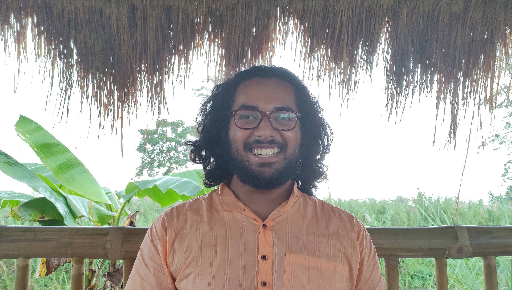

Past and Upcoming Talks
2024
- June 14, 2024: Coefficientwise-Hankel total positivity of the Laguerre polynomials, at Laboratoire de Probabilités, Statistique et Modélisation
- June 7, 2024: Coefficientwise total positivity of Hankel matrices in counting problems, at Institut de Mathématiques de Jussieu-Paris Rive Gauche.
- May 28, 2024: Coefficientwise-Hankel total positivity of the Laguerre polynomials, at Laboratoire d'informatique de Paris-Nord.
- May 24, 2024: Coefficientwise-Hankel total positivity of the Laguerre polynomials, at University of Tours.
- April 16, 2024: Continued fractions using a Laguerre digraph interpretation of the Foata--Zeilberger bijection and its variants,
at the
Institut Camille Jordan,
Lyon, France.
- March 26, 2024: Continued fractions using a Laguerre digraph interpretation of the Foata--Zeilberger bijection and its variants,
at the
Institut de Recherche en Informatique Fondamentale,
Paris, France.
- February 27, 2024: Coefficientwise Hankel-total positivity of the Schett polynomials,
at Chennai Mathematical Institute, Chennai, India.
- February 23, 2024: Accumulation of zeroes for polynomials with combinatorial significance,
at Combinatorics-related Open Problems Seminar (CROPS)
2023
- September 5, 2023: Continued fractions using a Laguerre digraph interpretation of the Foata--Zeilberger bijection and its variants,
at International Conference on Enumerative Combinatorics and Applications (ICECA) 2023.
Talk recording
Slides
- July 6, 2023: Continued fractions using a Laguerre digraph interpretation of the Foata--Zeilberger bijection and its variants,
at Permutation Patterns 2023, University of Burgundy, Dijon, France.
Slides
- May 23, 2023: Laguerre digraphs and continued fractions,
at Scottish Combinatorics Meeting 2023, University of Strathclyde, UK.
Slides
- May 11, 2023: The "quadratic family" of continued fractions and combinatorial sequences, at Topics in Special Functions and Number Theory (SFNT). Talk recording. Slides
2022
- August 23, 2022: Combinatorics and total positivity, at Chennai Mathematical Institute, Chennai, India. Slides
- August 17, 2022: Continued fractions and combinatorial sequences: factorials, Genocchi and median Genocchi numbers, at the Institute of Mathematical Sciences, Chennai, India. Slides
- June 9, 2022: Multivariate continued fractions associated to Genocchi and median Genocchi numbers, at Positivity Problems Associated to Permutation Patterns, Lancaster University, UK.
- April 20, 2022: Combinatorics of continued fractions in the realm of permutations and Genocchi numbers, at Graduate Online Combinatorics Colloquium (GOCC). Talk recording
- March 26, 2022: Combinatorics of continued fractions in the realm of permutations and Genocchi numbers, at Graduate Student Combinatorics Conference (GSCC) 2022. Talk recording
- March 9, 2022: Combinatorial Hodge Theory, at UCL-LSE combinatorics reading group. Spoke about https://arxiv.org/abs/1511.02888.
2021
- November 18, 2021: Analysing a strategy for a card guessing game via continuously increasing subsequences in multiset permutations at Algebra, Representations, Combinatorics and Symmetric functions in India. Talk recording.
- November 15, 2021: Analysing a strategy for a card guessing game via continuously increasing subsequences in multiset permutations at UCL Combinatorics Seminar series.
- July 16, 2021: Total positivity of the Eulerian triangle: A big generalisation of Brenti’s conjecture, at British Early Career Mathematicians Colloquium 2021.
- June 8, 2021: Total positivity of the Eulerian triangle: A big generalisation of Brenti’s conjecture, at Young Researchers in Mathematics 2021.
- April 24, 2021: Total positivity of the Eulerian triangle: A big generalisation of Brenti’s conjecture, at Graduate Student Combinatorics Conference (GSCC) 2021. Talk recording
2020
- November 17, 2020: Total Positivity during Distressing Times, talk at the mathematics department postgraduate students seminar at University College London.
- July 31, 2020: Combinatorics of Stammering Tableaux, Online Weekly Research Seminar for Early Career Mathematicians from India. Slides
2019
- September 14, 2019: A Mathematical Pursuit of Happiness, outreach talk to mathematics undergraduates at Digboi College, Assam, India.
- May 20th, 2019: Chromatic Polynomials and Heaps of Pieces at the weekly seminar of the Combinatorics and Interactions working group at Université de Bordeaux, France.
2017
- March 14th, 2017: Chromatic Polynomials and Heaps of Pieces at Institute of Mathematical Sciences, Chennai.